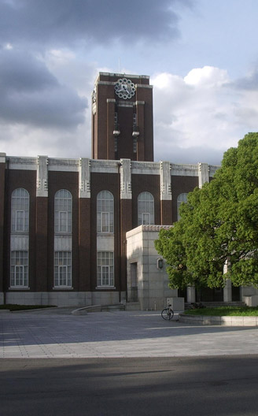

歷經戰火的洗禮，東海的知識歷史格外彌足珍貴，其所蘊含的思想新生命與新力量，透過對獨特教育理想的追求，以及無畏的拓荒精神，處處彰顯勇於創造與實驗的信條，藉由悠遠的傳承學風與人文革新，使東海的高等教育進程，為我國高階知識領域，開創思想先驅者的新價值。並擘劃出宗教教育與人文學風的璀璨風華。
綜合教學大樓落成照片近百年來，基督新教會對我國的教育發展曾有極大的貢獻。就高等教育而言，過去曾在我國先後創辦了十三所頗負盛名的基督教大學。迨大陸沉淪，各校盡遭共黨摧殘，被迫停辦，校舍均遭沒收，教會教育事業被迫停頓。
一九五三年十一月十日，董事會宣示「私立東海大學設置的目的和方針」，內容包括：創造一個能自由尋求真理的學術園地；秉持有教無類之教育原則，以重質不重量與集體生活為辦學方針；課程教育之外，推行勞作教育以建立「完人」的教育訓練；信仰上自由發展，以培養民主與自由的精神；尊重中國歷史文化傳統，並擔負溝通中西文化的任務；更重要的是，這一切的教育理想必須能體現落實到台灣社會上，訓練青年為時代而服務，從台灣發軔，直至世界每一角落。
董事會鑑於美國副總統尼克森訂於一九五三年十一月訪華，特敦請於十一月十一日蒞臨臺中大度山校地，為此一新設置之大學舉行動土典禮，以象徵中美兩國間之教育合作。典禮於是日上午十時十五分隆重舉行，教育部程天放部長、美國駐華大使藍欽（K. L. Rankin）、中部五縣市首長，總統府、外交部官員及各界人士一千餘人均與會共襄盛舉。一同見證台灣高級知識教育開創的歷史時刻。
此後，董事會開始進行校地接收，委託貝聿銘先生與陳其寬先生、張肇康先生負責設計校園，積極進行校舍興建工作。同時，確定先行設立文學院和理學院，文學院下設中國文學系、外國語文學系、歷史學系。理學院下設物理學系、化學學系、生物學系、化學工程學系，並約聘曾約農先生為首任校長。
二Ｏ一三年二月一日，湯銘哲博士接任第八任校長。湯校長認為專業教育和博雅教育需均衡發展，培養具有創意、國際觀，以及跨領域學習的學生。以學生為本（student-centered education）的教育，提供所有機會給全校教職員生一起成長，培養學生具有思考力、批判力和創新力，將東海形塑成為一個優質的學術人文環境。大家同心合意，一起創造東海大學的文藝復興。

Home >
關於東大 >
沿革
